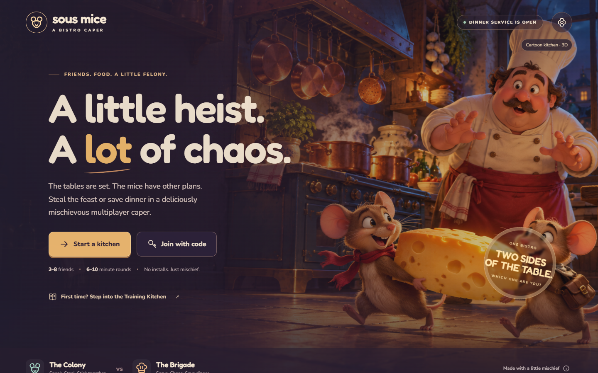
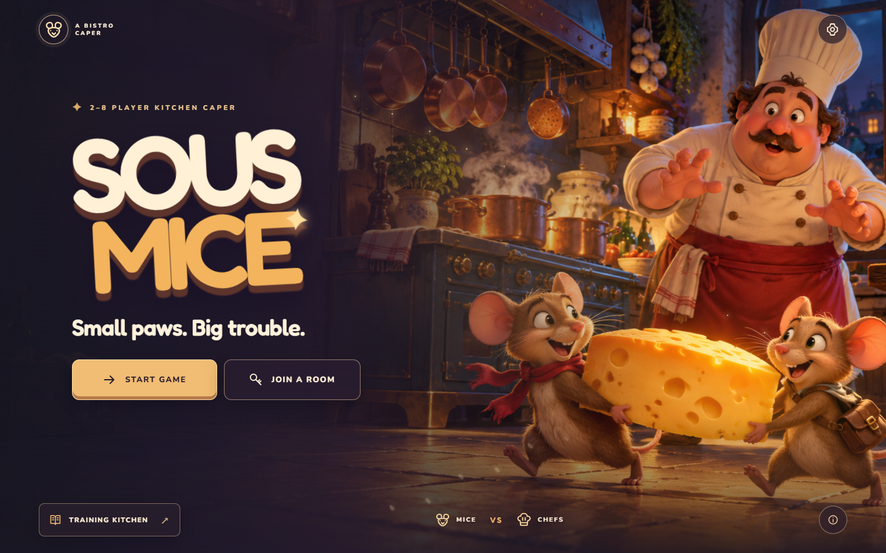
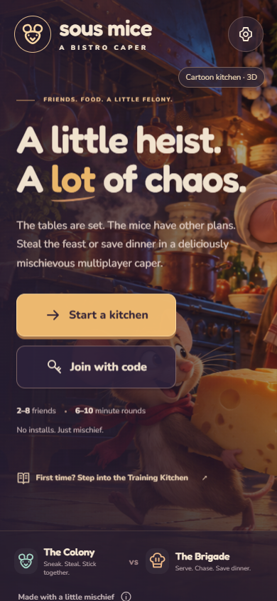
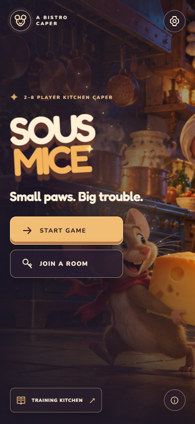

The front door, reimagined.
The title screen now leads with the game and its characters. The revised layout keeps Play, Join, Training, and Settings in view from desktop to phone.
Desktop


Phone


Motion and interaction
The title enters in stages. The kitchen pans gently, light and flour motes drift, and buttons respond to hover. Reduced-motion settings stop these effects.